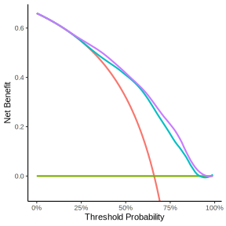
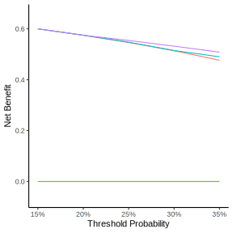
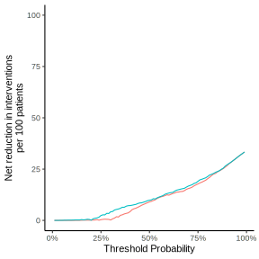

Prediction Model might gain accuracy if you’ll add more relevant features to existing models, but many times it’s not obvious what is the additional value of additional feature and how to quantify it in terms of Decision Making. The post Decision curve analysis for quantifying the additional benefit of a new marker by Emily Vertosick and Andrew Vickers show a simple example (the code presented here is almost identical to the original code presented in the link).
library(Hmisc)
library(dplyr)
library(tibble)
getHdata(acath)
acath <- subset(acath, !is.na(choleste))library(rms)
pre <- lrm(sigdz ~ rcs(age,4) * sex, data = acath)
pre_pred <- predict(pre, type='fitted')
post <- lrm(sigdz ~ rcs(age,4) * sex + rcs(choleste,4) + rcs(age,4) %ia% rcs(choleste,4), data = acath)
post_pred <- predict(post, type='fitted')
acath_pred <- bind_cols(
acath,
pre_pred %>% enframe(name = NULL, value = "pre"),
post_pred %>% enframe(name = NULL, value = "post")
)<div class="panel-name">original code with dcurves</div>library(dcurves)
dca_prepost <- dca(
sigdz ~ pre + post,
data = acath_pred,
label = list(pre = "Age and Sex",
post = "Age, Sex and Cholesterol"))
dca_prepost %>%
plot(smooth = TRUE) +
theme_classic() +
theme(legend.position = "none")
<div class="panel-name">rtichoke code</div>library(rtichoke)
library(plotly)
performance_data_dc <- prepare_performance_data(
probs = list(
"Age and Sex" = acath_pred$pre,
"Age, Sex and Cholesterol" = acath_pred$post
),
reals = list(acath_pred$sigdz)
)
performance_data_dc %>%
plot_decision_curve(
col_values = c("#00BFC4", "#C77CFF"),
size = 400
) %>%
layout(
yaxis = list(
range =
c(-0.07, 0.7)
)
)library(dcurves)
dca_prepost_15_35 <- dca(
sigdz ~ pre + post,
data = acath_pred,
thresholds = seq(0.15, 0.35, by = 0.05),
label = list(pre = "Age and Sex",
post = "Age, Sex and Cholesterol")) %>%
plot(type = 'net_benefit',
smooth = FALSE,
show_ggplot_code = FALSE)
dca_prepost_15_35 +
theme_classic() +
theme(legend.position = "none")
performance_data_dc %>%
rtichoke::plot_decision_curve(
col_values = c("#00BFC4", "#C77CFF"),
min_p_threshold = 0.15,
max_p_threshold = 0.35,
size = 400
) %>%
plotly::layout(
yaxis = list(range =
c(-0.07, 0.7))
) <div class="panel-name">original code</div>
<div class="panel-name">rtichoke code</div>performance_data_dc %>%
rtichoke::plot_decision_curve(
col_values = c("#F8766D", "#00BFC4"),
type = "interventions avoided",
size = 400
) %>%
plotly::layout(
yaxis = list(range =
c(-10, 100))
)performance_data_dc %>%
rtichoke::plot_decision_curve(
col_values = c("#00BFC4", "#C77CFF"),
type = "combined",
size = 400
)